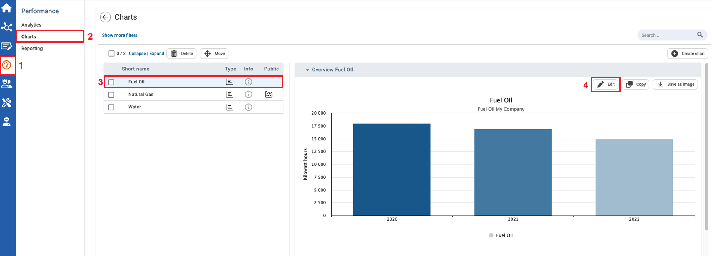
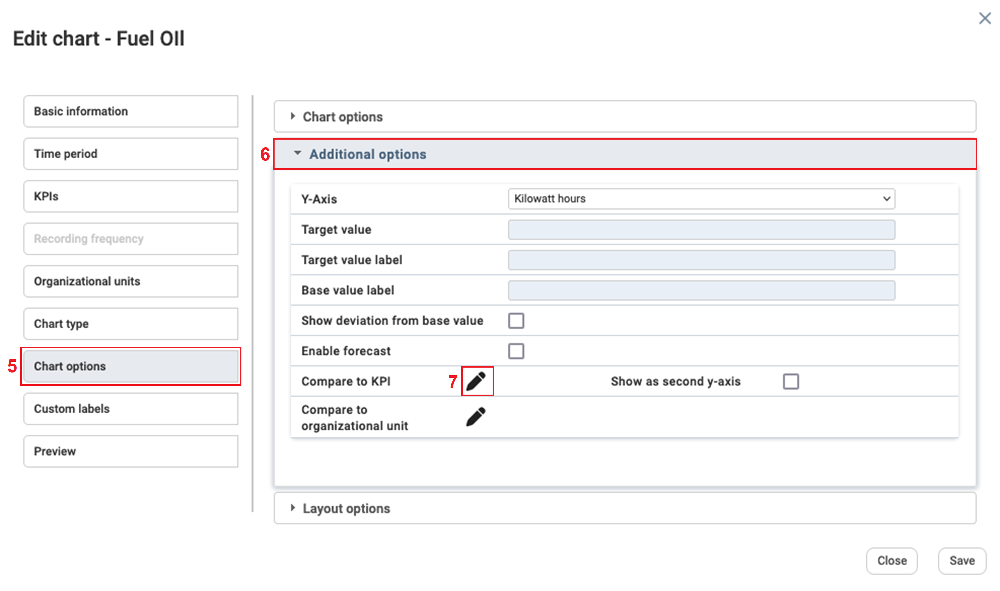
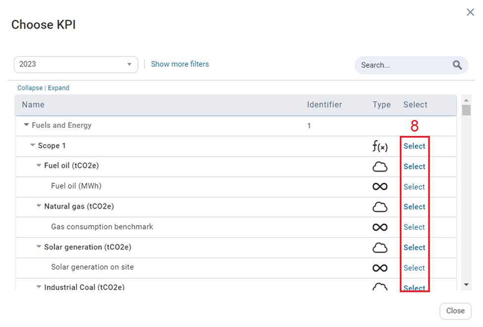
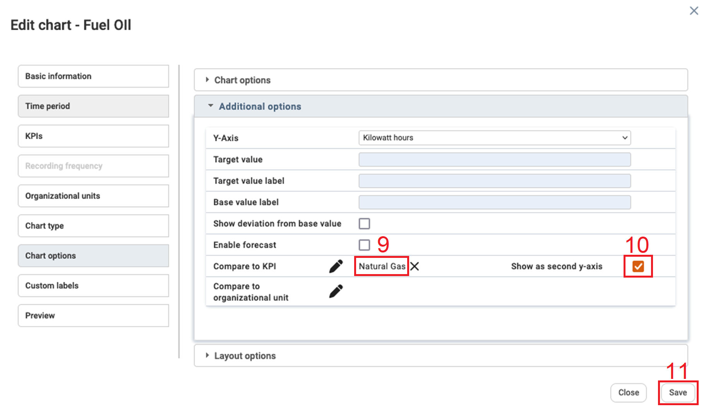
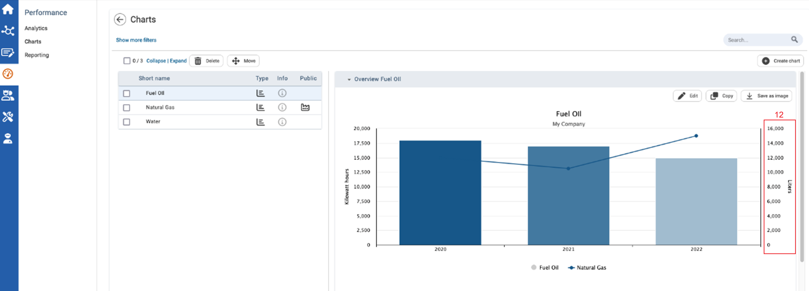

icon. The Choose KPI window appears.
icon. The Choose KPI window appears.
In the Charts Module of the Performance section, you can add a second Y-Axis to new or existing charts to compare multiple data sets. The second Y-Axis will consist of KPI values.
This function can only be added to charts that have one organizational unit included and when the X-axis does not consist of KPI values.
To Add a Second Y-axis to Charts

| 1 | On the left navigational panel, click the Performance icon. The Performance menu appears. |
| 2 | Click Charts. The Charts window appears. |
| 3 | Click a chart that has only one organizational unit included and does not have KPI values for the x-axis. The chart will display to the right. Ensure the chart selected has one organizational unit included, and the x-axis does not consist of KPI values. |
| 4 | Click the Edit button at the top right of the chart displayed. The Edit Chart window appears. |

| 5 | On the left panel of the Edit Chart window, Click Chart Options. The Chart options window displays to the right. |
| 6 | Click the Additional options section. The Additional options section expands. |
| 7 | In the Additional options section, to the right of Compare to KPI click the edit icon. The Choose KPI window appears. |

| 8 | On the Choose KPI window, click Select to the right of the KPI you want to have on the second Y-Axis. The Choose KPI window closes. |

| 9 | On the Additional options section, to the right of the Compare to KPI Edit icon, the KPI selected appears. |
| 10 | Click the Show as second y-axis checkbox. |
| 11 | Click Save. The Edit Chart window closes. |

| 12 | The second y-axis window displays on the chart, with KPI values. |